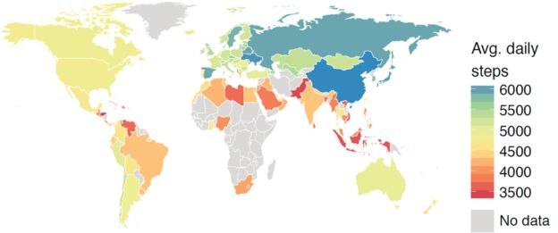

你是不是住在世界上最懒惰的地区？
文章来源:http://www.bbc.com/zhongwen/simp/science-40585999
发稿日期:2017/7/12
美国科学家用从人们手机上获取的"全球性大数据"来研究人们的日常活动量，发现中国地区是最活跃的。 (BBC)
美国科学家用从人们手机上获取的"全球性大数据"来研究人们的日常活动量，发现中国地区是最活跃的。
斯坦福大学的科学家分析了相当于6800万个日子里每分钟的数据，显示香港地区的人们活动最多，每日平均步行数高达6880，而全球平均步行数是4961。
最不活跃的是印度尼西亚，每日平均步行数为3513。
大数据搜集
这一研究论文发表在科学期刊《自然》（Nature）上。
研究者之一、生物工程学教授斯科特·德尔普说，这个研究的规模之大前所未有。
大多数手机里都有一个加速计（accelerometer）可以记录步伐，这就让研究者从使用记录步伐的手机应用程序Argus中，获得70多万人的匿名数据。
活动量差距与肥胖症
有关具体的发现还可能有助于应对肥胖症和其它健康问题。

全球各地（除灰色无数据地区）人们活跃程度一览，颜色越深每日平均活动越多。 (TIM ALTHOFF)
比如说，这一研究发现，由最有活力和最懒惰者步伐的差距得出所谓"活动量的不平等"。一个地区活动量不平等数据越大，肥胖症的比率就越大。
研究者之一蒂姆·阿尔托夫举例说："瑞典的最活跃和最懒惰的步伐差距最小，而该国的肥胖症率也最小。"
美国和墨西哥的每日平均步行数大致相等，但美国的活动量的不平等数据要大得多，肥胖症率也更高。
性别差距
研究者发现，活动量差距很大程度上是由两性之间的有关差距造成的。
比如在日本，男女活动量差距小，肥胖症发病率和活动量差距都小。
而在两性的活动量差距大的国家，比如美国和沙特，女性通常活跃时间比男性少。
市政建设
研究人员还发现，方便步行即可解决生活问题的地方肥胖症率就低。
他们举例出69个美国城市方便步行，居民更容易保持活跃。
纽约和旧金山这样的城市很方便步行者，人们更加活跃。而在像休斯敦和孟菲斯这样的城市，必须驾车才方便出行，肥胖症率就较高。